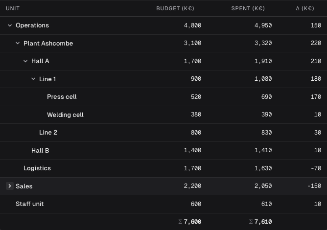
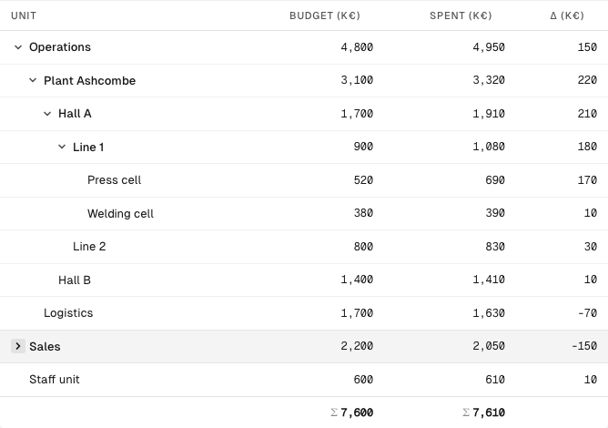
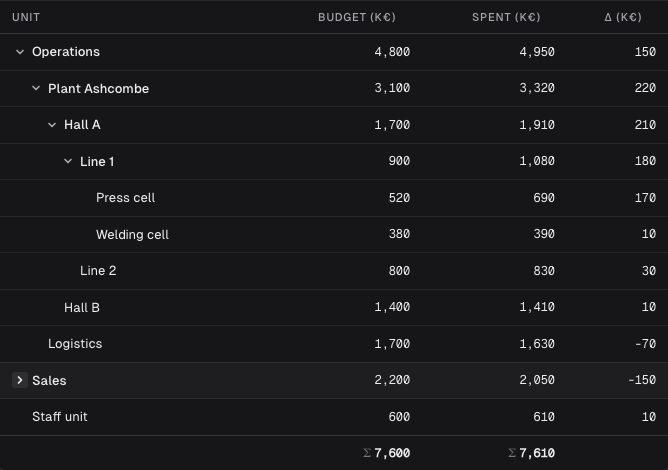
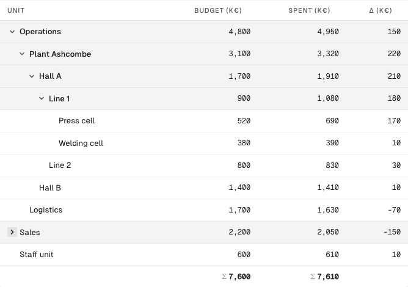
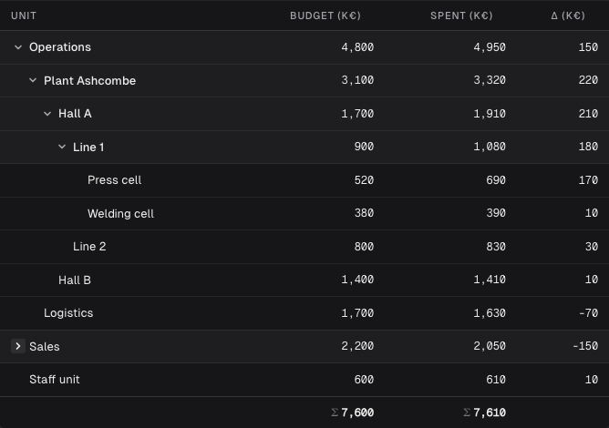
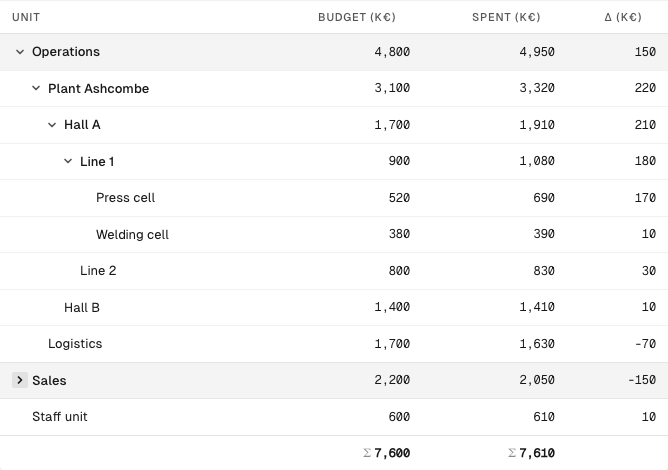
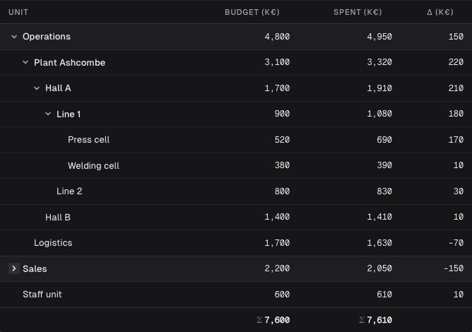
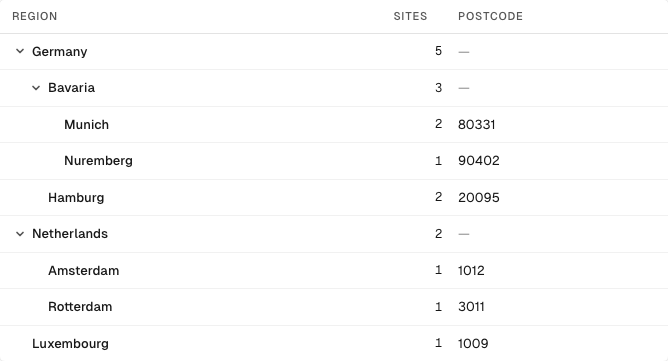
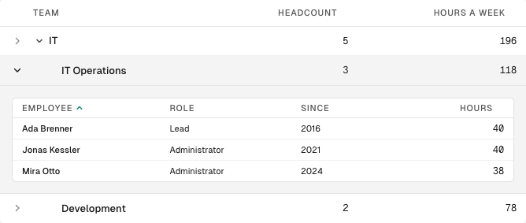

Tree rows: how a branch looks (table-tree-rows 01)
Rendered from the real table on the demo page "Tree rows", example "An uneven organisation": every branch open except Sales. The forms are injected CSS over the shipped table; the screenshots were made with Playwright.
0 · Today (as built): no form, every row header medium
Light

Dark
1 · Weight only: a branch medium, a leaf regular

Light

Dark
2 · An open branch heads its rows: the group header's tone, a closed branch a plain medium row

Light

Dark
3 · Form by level (ADR-0029): only the roots carry the tone, below weight only

Light

Dark
Leaves with more fields

Absent cells: a postcode only places carry, absent on countries and states.

Master/detail: the employees of IT Operations in its RowDetail, a table of their own. Note the row detail's expander beside the fold - two chevrons on one row, and an expander on IT although it has no employees.